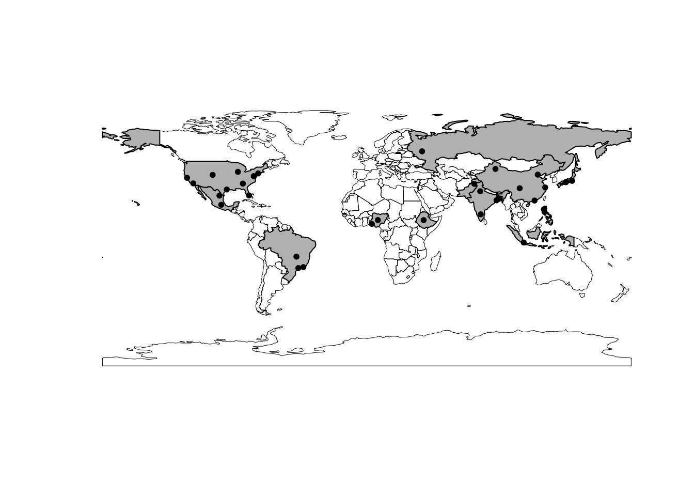
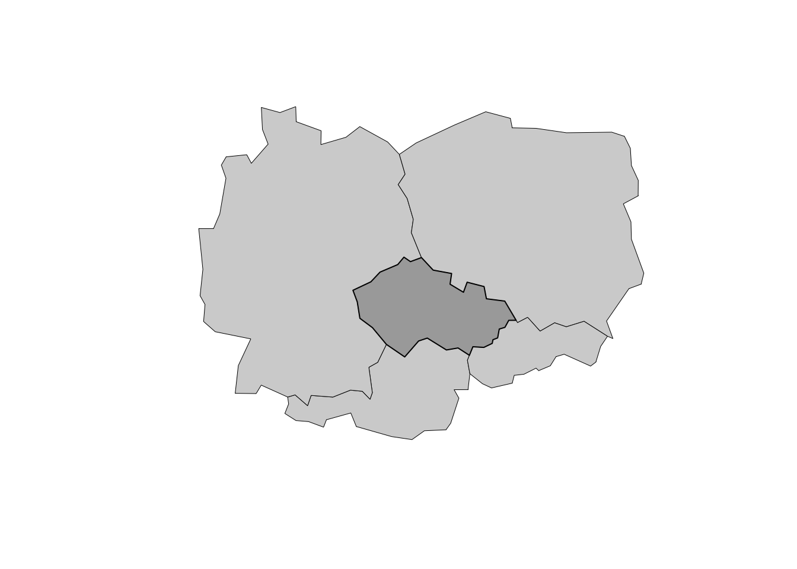
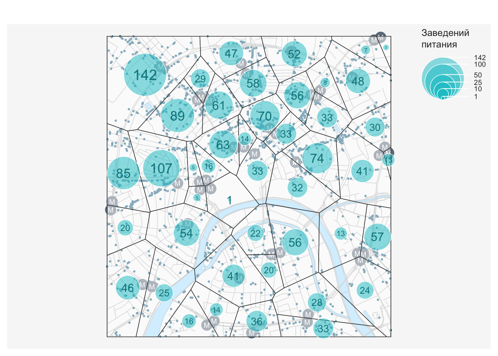
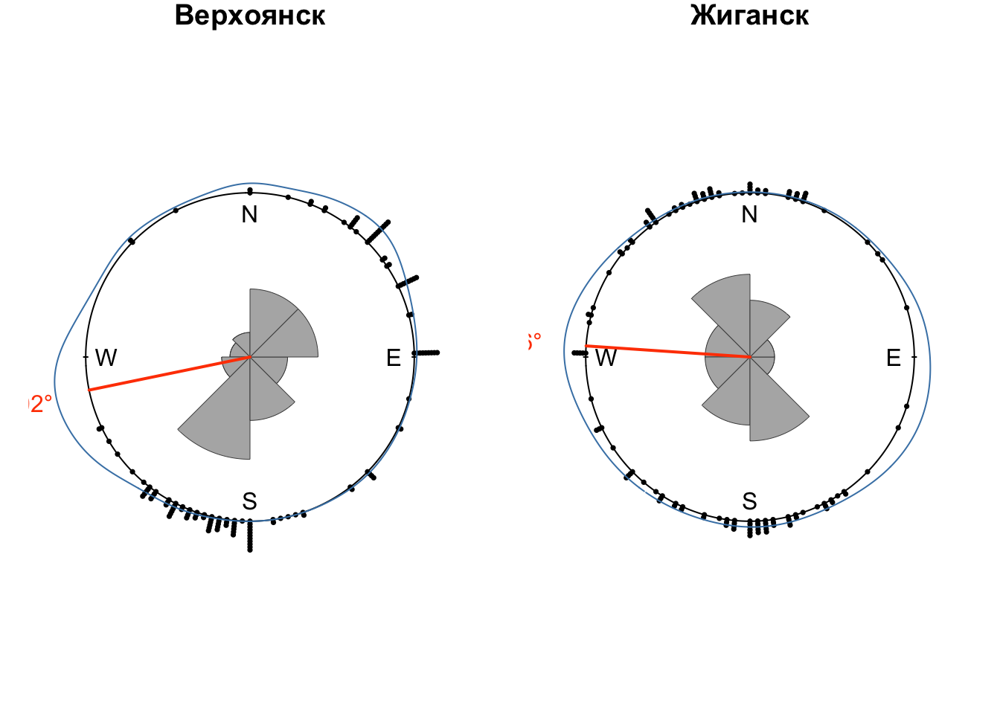

library(readxl)
library(sf)
library(tidyverse)
library(classInt)
library(mapsf) # Удобное построение тематических карт средствами plot()
library(circular) # статистика направлений
library(NPCirc) # статистика направлений
library(pracma)13 Векторный анализ
13.1 Предварительные условия
Для выполнения кода данной лекции вам понадобятся следующие пакеты:
Данный модуль посвящен пространственному анализу в R. Несмотря на то, что пространственный анализ — чрезвычайно широкая и многогранная область геоинформатики, все методы, которые объединяются под этим заголовком, базируются на ограниченном числе базовых операций, таких как вычисление расстояний, оценка плотности распределения, построение буферных зон и выполнение пространственных запросов. В настоящем модуле мы рассмотрим, как одно и то же множество пространственных объектов можно анализировать в различных контекстах, используя базовые методы пространственного анализа
Пространственный анализ связан с оценкой размещения объектов и распределения величин в географическом пространстве. В геоинформатике для этих целей используется два подхода: геометрический и статистический. Эти подходы образуют две ступени пространственного анализа: как правило, данные геометрического анализа представляют собой входную информацию для анализа статистического.
Геометрический подход связан с вычислением расстояний между географическими локациями, а также агрегированием объектов/интегрированием показателей в пределах заданных областей, вдоль линий или в окрестности точек. Поиск входной информации для агрегирования решается путем выполнения пространственных запросов.
13.2 Пространственные запросы
Пространственные запросы связаны с поиском объектов (географических локаций), удовлетворяющих условию, заданному на множестве пространственных отношений. В свою очередь, пространственные отношения бывают трех типов: дирекционные (направления), метрические (расстояния) и топологические (взаимное размещение). Примеры пространственных запросов знакомы любому географу:
- Найти все объекты внутри административного района (топологические отношения)
- Найти все объекты не далее 100 метров от дороги (метрические отношения)
- Найти все объекты, расположенные к северу от точки (дирекционные отношения)
Пространственные запросы могут объединять несколько условий. Можно найти объекты, удовлетворяющие одновременно всем (логическое И) вышеперечисленным условиям: внутри района, не далее 100 м от дороги и к северу от выбранной точки; или хотя бы одному (логическое ИЛИ) из вышеперечисленных условий. Результат выполнения такого комплексного запроса будет являться, соответственно, пересечением множеств объектов, полученных каждым из запросов, или их объединением.
Наконец, пространственные запросы можно объединять с атрибутивными и временными. Атрибутивные запросы связаны с поиском объектов (географических локаций), удовлетворяющих условию, заданному на множестве характеристик объектов. Временные запросы определены на множестве шкалы времени. Например, можно найти все населенные пункты населением свыше 10 000 человек (атрибутивный запрос), находящиеся в пределах выбранного административного района (пространственный запрос, основанный на топологических отношениях), время движения от которых до районного центра не превышает 90 минут (временной запрос).
13.2.1 Контекстные и целевые объекты
При выполнении пространственного анализа, в общем случае, имеются множества объектов двух типов:
- контекстные — объекты, относительно которых будет оцениваться размещение других объектов, то есть, определяющие контекст анализа
- целевые — объекты, размещение которых анализируется по отношению к контекстным объектам, что является целью анализа
Эти множества, разумеется, могут совпадать. Скажем, мы можем проанализировать размещение магазинов относительно других магазинов.
13.2.2 Метрические отношение
13.2.3 Топологические отношения
Поиск объектов по местоположению базируется на проверке топологических отношений между объектами. Топологические отношения описывают взаимное расположение объектов. Различные варианты топологических отношений для площадных объектов представлены на следующем рисунке, где серым цветом показаны пересечения внутренних областей объектов \(A\) и \(B\), синим цветом — пересечения границ объектов \(A\) и \(B\):

Отношение Пересекает (intersects) будет истинно для любого случая когда две геометрии имеют хотя бы одну общую точку, то есть во всех случаях кроме Не пересекает (disjoint). Для проверки этих, а также некоторых других отношений, в пакете sf существует ряд функций:
| Функция | Топологическое отношение |
|---|---|
st_intersects(x, y) |
x имеет общие точки с y |
st_disjoint(x, y) |
x не имеет общих точек с y |
st_touches(x, y) |
x касается y (граница x имеет общие точки с границей y И внутренняя область x не имеет имеет общих точек с внутренней областью y) |
st_crosses(x, y) |
x пересекает y (граница x имеет общие точки с границей y, при этом размерность их пересечения меньше размерности хотя бы одного из исходных объектов) |
st_within(x, y) |
x внутри y (все точки x содержатся в y И внутренняя область x имеет общие точки с внутренней областью y) |
st_contains(x, y) |
x содержит y (все точки y содержатся в x И внутренняя область y имеет общие точки с внутренней областью x) |
st_contains_properly(x, y) |
x содержит y полностью (все точки y содержатся в x И граница x не имеет общих точек с границей y) |
st_overlaps(x, y) |
x перекрывает y (внутренняя область x имеет как общие, так и не общие точки с внутренней областью y) |
st_equals(x, y) |
x совпадает y (множества точек x и y совпадают) |
st_covers(x, y) |
x покрывает y (все точки y содержатся в x) |
st_covered_by(x, y) |
x покрыт y (все точки x содержатся в y) |
st_equals_exact(x, y) |
x совпадает y точно (упорядоченные множества точек x и y совпадают) |
Между covered_by и within, а также covers и contains нет разницы в случае, когда оба объекта являются площадными. Эта разница будет сказываться если хотя бы один из объектов является линией либо точкой. В этом случае within, contains и contains_properly будут давать ложный результат (FALSE), поскольку ни у линий, ни у точек нет внутренней области.
Проверка топологических отношений используется для выполнения выборки объектов по местоположению — пространственной выборки. Наиболее простой способ выбрать объекты по пространственному местоположению — это использовать один слой в качестве фильтра для другого слоя. В этом случае будет по умолчанию использовано отношение st_intersects() (пересекает). Никаких отличий от работы с обычными таблицами нет. Например, вот так можно выбрать точки, находящиеся внутри ранее отобранных стран с максимальным ВВП:
countries = st_read('data/ne/countries.gpkg')
## Reading layer `admin_0_map_units' from data source
## `/Users/tsamsonov/GitHub/r-geo-course/data/ne/countries.gpkg'
## using driver `GPKG'
## Simple feature collection with 183 features and 72 fields
## Geometry type: MULTIPOLYGON
## Dimension: XY
## Bounding box: xmin: -180 ymin: -90 xmax: 180 ymax: 83.64513
## Geodetic CRS: WGS 84
outlines = st_geometry(countries)
cities = st_read('data/ne/cities.gpkg')
## Reading layer `populated_places' from data source
## `/Users/tsamsonov/GitHub/r-geo-course/data/ne/cities.gpkg'
## using driver `GPKG'
## Simple feature collection with 243 features and 103 fields
## Geometry type: POINT
## Dimension: XY
## Bounding box: xmin: -175.2206 ymin: -41.29999 xmax: 179.2166 ymax: 64.15002
## Geodetic CRS: WGS 84
city.pts = st_geometry(cities)
largest = countries |>
select(pop_est) |>
filter(pop_est > 100000000)
# Наносим исходную конфигурацию
plot(outlines, lwd = 0.5)
plot(cities, col = 'black', pch = 20, cex = 0.5, add = TRUE)
sf::sf_use_s2(FALSE)
# Отбираем точки внутри стран с максимальным ВВП
sel = cities[largest, ]
# Смотрим что получилось
plot(outlines, lwd = 0.5)
plot(largest, col = 'gray', add = TRUE)
plot(sel, pch = 20, col = 'black', add = TRUE)
Разумеется, при выполнении пространственных запросов могут возникать и другие пространственные отношения. Например, мы можем выбрать все страны, имеющие общую границу с Чехией. Для этого можно использовать топологическое отношение st_touches вместо st_intersects — это будет гарантировать, что сама Чехия в результате не выберется (касающиеся объекты не могут перекрываться). Тип отношения необходимо поставить в параметр op = при выполнении фильтрации фрейма данных:
cz = filter(countries, sovereignt == 'Czechia')
neighbors = countries[cz, op = st_touches]
plot(st_geometry(neighbors), col = 'lightgray', lwd = 0.5)
plot(cz, col = 'darkgray', add = TRUE)
13.2.4 Зоны окружения объектов
Весьма часто в качестве контекстного множества используются не реальные пространственные объекты, а набор абстрактных геометрических объектов, каждый из которых является производным от оригинального пространственного объекта. Как правило, такие геометрии представляют из себя зоны окружения объектов, построенные по некоторому формальному признаку.
Методы построения зон окружения можно разделить по двум критериям: учету взаимного размещения объектов (абсолютные и конкурентные зоны) и пространству признаков, в котором эти зоны строятся.
Если зоны окружения строятся без учета взаимного размещения объектов, то есть, независимо для каждого объекта, то мы будем называть их абсолютными. Абсолютные зоны окружения строятся путем фиксации порогового расстояния либо времени движения относительно исходного объекта. Такие зоны носят название буферных зон (по расстоянию) или зон доступности (по времени). Границей абсолютной зоны окружения является изолиния, построенная по соответствующему показателю. В случае времени это будет изохрона. Примеры абсолютных зон окружения:
- Водоохранная зона реки 200 метров (буферная зона)
- Площадь городской территории, в любую точку которой вы можете доехать из дома на машине в течение 30 минут (зона доступности)
Если же при построении зон окружения учитывается взаимное размещение объектов, то в данном случае зоны доступности строятся не исходя из порогового значения показателя (хотя оно может использоваться дополнительно), а исходя из того, какой объект является ближайшим. Конкурентные зоны окружения представляют собой разбиение пространства на неперекрывающиеся участки без дыр, каждый из которых является зоной окружения соответствующего пространственного объекта. При этом любая точка внутри зоны окружения объекта ближе к этому объекту по выбранному признаку (времени или расстоянию), нежели к любому другому объекту. Конкурентные зоны окружения, построенные по расстоянию, можно реализовать средствами диаграммы Вороного.
13.3 Постановка задач и изучение данных
В настоящем модуле мы рассмотрим вышеперечисленные методы на примере анализа размещения пунктов общественного питания — кафе, ресторанов и т.д. Используя методы пространственного анализа в среде R, мы ответим на следующие вопросы:
- Какие улицы являются местами наибольшей концентрации заведений общественного питания?
- Как распределены заведения общественного питания по районам центра Москвы?
- Какие заведения общественного питания находятся вблизи метро и на берегу реки?
- В какие заведения общественного питания можно доехать от выбранной точки в течение 5 минут?
- Каков оптимальный маршрут между вашим местоположением и заведением, в котором вы хотите пообедать?
В качестве источника данных используем OpenStreetMap — краудсорсинговый интернет-проект по созданию бесплатных и открытых пространственных данных глобального охвата. Данные OpenStreetMap в удобном для использования в ГИС виде доступны на портале GIS-Lab.
Для решения задач настоящего модуля нам понадобятся следующие дополнительные пакеты, которые мы не использовали ранее:
- osrm — построение зон доступности, маршрутов и матриц корреспонденции онлайн на основе данных OpenStreetMap и OSRM API.
- mapsf — пакет, облегчающий построение тематических карт и легенд средствами стандартной функции
plot().
Начнем наше исследование с визуального анализа исходных данных
# Чтение данных
roads = read_sf("data/roads.gpkg") # Дороги
poi = read_sf("data/poi_point.gpkg") # Точки интереса
rayons = read_sf("data/boundary_polygon.gpkg") # Границы районов
stations = read_sf("data/metro_stations.gpkg") # Станции метро
water = read_sf("data/water_polygon.gpkg") # Водные объекты
# Прочитаем текущие параметры компоновки
def = par(no.readonly = TRUE)
# Уберем поля, чтобы карта занимала весь экран
par(mar = c(0,0,0,0))
# Получим ограничивающий прямоугольник слоя дорог в качестве общего охвата карты
frame = roads |> st_bbox() |> st_as_sfc() |> st_geometry()
## ОБЗОР ИСХОДНЫХ ДАННЫХ -------------------------------------
# Визуализируем входные данные
basemap = function(add = FALSE) {
mf_base(frame, col = NA, add = add)
mf_base(water,
col = "lightskyblue1",
border = "lightskyblue3",
add = TRUE)
mf_base(roads,
col = "gray70",
add = TRUE)
}
basemap()
mf_base(poi,
col = "deepskyblue4",
pch = 20,
cex = 0.5,
add = TRUE)
Теперь приступим к изучению данных, хранящихся в слое poi (от англ. POI — Point Of Interest). Данный слой содержит все точечные маркеры OSM, которыми были отмечены на карте объекты, представляющие (по мнению создателей данных) интерес для пользователей. В POI включаются самые разнообразные объекты, такие как: объекты сферы услуг (amenity), места для отдыха (leisure), офисные здания (office), магазины и торговые центры (shop), туристические достопримечательности (tourism), спортивные объекты (sport), примечательные инженерные сооружения (man_made). В наших данных информация разнесена по соответствующим полям, каждый объект снабжен уникальным идентификатором:
## Simple feature collection with 6623 features and 9 fields
## Geometry type: POINT
## Dimension: XY
## Bounding box: xmin: 410947.3 ymin: 6176678 xmax: 415889.9 ymax: 6181909
## Projected CRS: WGS 84 / UTM zone 37N
## # A tibble: 6,623 × 10
## OSM_ID NAME MAN_MADE LEISURE AMENITY OFFICE SHOP TOURISM SPORT
## <dbl> <chr> <chr> <chr> <chr> <chr> <chr> <chr> <chr>
## 1 2932331614 Арт-квартал <NA> <NA> <NA> <NA> doit… <NA> <NA>
## 2 3639408399 <NA> <NA> <NA> pharma… <NA> <NA> <NA> <NA>
## 3 3707882299 <NA> <NA> <NA> parkin… <NA> <NA> <NA> <NA>
## 4 3639408396 Стиль золото <NA> <NA> <NA> <NA> jewe… <NA> <NA>
## 5 3639408397 Цветочная баз… <NA> <NA> <NA> <NA> flor… <NA> <NA>
## 6 1413216563 Азбука Вкуса <NA> <NA> <NA> <NA> supe… <NA> <NA>
## 7 3641139540 <NA> <NA> <NA> waste_… <NA> <NA> <NA> <NA>
## 8 3636920934 Аршин <NA> <NA> restau… <NA> <NA> <NA> <NA>
## 9 3644422074 Адамас <NA> <NA> <NA> <NA> jewe… <NA> <NA>
## 10 3424516009 Андерсон <NA> <NA> restau… <NA> <NA> <NA> <NA>
## # ℹ 6,613 more rows
## # ℹ 1 more variable: geometry <POINT [m]>Заведения общественного питания по классификатору OSM относятся к классу amenity. Поскольку данный классификатор представляет собой множество номинальных (категориальных) данных, можно начать изучение состава данных с помощью таблицы частот, которая строится средствами функции table():
data.frame(table(poi$AMENITY))
## Var1 Freq
## 1 arts_centre 17
## 2 atm 153
## 3 bank 407
## 4 bar 161
## 5 bench 210
## 6 bicycle_parking 81
## 7 bicycle_rental 116
## 8 biergarten 1
## 9 brothel 1
## 10 bureau_de_change 21
## 11 bus_station 1
## 12 cafe 490
## 13 car_rental 1
## 14 car_wash 12
## 15 charging_station 1
## 16 child_care 1
## 17 cinema 16
## 18 clinic 51
## 19 clock 10
## 20 college 5
## 21 commercial 1
## 22 community_centre 4
## 23 courthouse 3
## 24 dancing_school 1
## 25 dentist 58
## 26 doctors 22
## 27 drinking_water 3
## 28 driving_school 2
## 29 embassy 31
## 30 emergency_phone 5
## 31 fast_food 169
## 32 ferry_terminal 5
## 33 food_court 3
## 34 fountain 32
## 35 fuel 8
## 36 gym 1
## 37 hospital 2
## 38 hotel 1
## 39 ice_cream 3
## 40 kindergarten 13
## 41 library 17
## 42 musical_school 1
## 43 nightclub 19
## 44 official 1
## 45 parking 92
## 46 parking_entrance 72
## 47 parking_space 1
## 48 payment_terminal 6
## 49 pharmacy 166
## 50 photolab 1
## 51 place_of_worship 23
## 52 police 21
## 53 post_box 4
## 54 post_office 37
## 55 pub 96
## 56 public_bookcase 2
## 57 public_building 8
## 58 recycling 6
## 59 register_office 2
## 60 restaurant 844
## 61 school 10
## 62 shelter 2
## 63 shop 4
## 64 social_facility 3
## 65 stripclub 4
## 66 taxi 1
## 67 telephone 58
## 68 theatre 48
## 69 toilets 82
## 70 training 15
## 71 university 15
## 72 vehicle_inspection 1
## 73 vending_machine 98
## 74 waste_basket 52
## 75 waste_disposal 102Для дальнейшего анализа отберем из всего множества объектов сферы услуг заведения, где можно поесть: рестораны, кафе, бары, пабы и заведения быстрого питания (фастфуд). В классификаторе OSM эти заведения имеют тип restaurant, bar, cafe, pub и fast_food. Для отбора нужных строк и столбцов используем dplyr:
poi_food = poi |>
select(NAME, AMENITY) |>
filter(AMENITY %in% c("restaurant", "bar", "cafe",
"pub", "fast_food"))
head(poi_food)
## Simple feature collection with 6 features and 2 fields
## Geometry type: POINT
## Dimension: XY
## Bounding box: xmin: 410954.9 ymin: 6178842 xmax: 411023.8 ymax: 6181896
## Projected CRS: WGS 84 / UTM zone 37N
## # A tibble: 6 × 3
## NAME AMENITY geometry
## <chr> <chr> <POINT [m]>
## 1 Аршин restaurant (410975.2 6181661)
## 2 Андерсон restaurant (410954.9 6180118)
## 3 Holynoot fast_food (410958.8 6179938)
## 4 Gayane's restaurant (410958.4 6178842)
## 5 Molon Lave restaurant (411013.7 6181448)
## 6 Шоколадница cafe (411023.8 6181896)13.4 Анализ расстояний
Метрические отношения связывают объекты в терминах расстояний между ними. Предположим, что мы хотим определить улицы, являющиеся сосредоточением заведений питания. Один из вариантов решения состоит в том, чтобы для каждого пункта обслуживания определить ближайшую к нему улицу и далее для каждой улицы просуммировать количество раз, которое улиц оказалось ближайшей. Подробнее алгоритм решения выглядит следующим образом:
- Вычислить матрицу расстояний между пунктами обслуживания и улицами. Размер матрицы \(M \times N\), где \(M\) — количество улиц (строк), \(N\) — количество пунктов (столбцов)
- Найти в каждом столбце минимальное расстояние.
- Получить идентификатор улицы (номер строки), соответствующий данному расстоянию.
- Записать идентификатор в выходной вектор.
Таким образом, мы получим вектор из идентификаторов улиц, при этом каждый идентификатор будет встречаться в этом векторе столько раз, сколько раз данная улица оказалась ближайшей к какому-то объекту.
Вычислим матрицу расстояний с помощью функции st_distance() из пакета sf:
## АНАЛИЗ РАССТОЯНИЙ -------------------------------------
dist_matrix = st_distance(roads, poi_food)
# посмотрим, как выглядит результат на примере первых пяти объектов
print(dist_matrix[1:5,1:5])
## Units: [m]
## [,1] [,2] [,3] [,4] [,5]
## [1,] 4962.292 3420.6849 3240.2066 2145.2044 4748.686
## [2,] 2247.737 705.2923 524.9411 570.3986 2035.341
## [3,] 2213.236 670.7904 490.4167 605.1606 2000.759
## [4,] 2197.874 655.4285 475.0629 620.4411 1985.242
## [5,] 3910.957 2368.5560 2188.1348 1092.5472 3698.246Далее необходимо в каждом столбце матрицы найти номер строки с минимальным расстоянием. Для этого необходимо получить порядок сортировки элементов по возрастанию значений данного столбца и взять номер первого элемента. Операцию можно применить с помощью apply ко всем столбцам:
ids = apply(dist_matrix, 2, function(X) order(X)[1])Теперь применим уже знакомую нам функцию table(), чтобы подсчитать, сколько раз каждая улица оказалась наиболее близкой. Далее присоединим статистику к исходным улицам, однако для этого нам потребуется вынести названия строк (номеров) улиц в отдельный столбец.
count_stats = ids |>
table() |>
as_tibble() |>
mutate(ids = as.integer(ids))
roads = roads |> mutate(id = row_number())
roads_poi = left_join(roads,
count_stats,
by = c('id' = 'ids'))Посмотрим первые 10 улиц по количеству общепита:
# Статистика по улицам в табличном представлении (первые 10)
roads_poi |>
select(NAME, n) |>
arrange(desc(n)) |>
head(10)
## Simple feature collection with 10 features and 2 fields
## Geometry type: MULTILINESTRING
## Dimension: XY
## Bounding box: xmin: 411105.1 ymin: 6178083 xmax: 414504.1 ymax: 6181734
## Projected CRS: WGS 84 / UTM zone 37N
## # A tibble: 10 × 3
## NAME n geometry
## <chr> <int> <MULTILINESTRING [m]>
## 1 улица Арбат 43 ((412157.9 6179399, 412148.5 6179396, 412147.2…
## 2 улица Новый Арбат 24 ((411105.1 6179409, 411112.5 6179408, 411162.7…
## 3 Цветной бульвар 22 ((413491.7 6181734, 413493.8 6181729, 413495.6…
## 4 Мясницкая улица 20 ((414504.1 6180781, 414499.7 6180779, 414497.2…
## 5 Никольская улица 17 ((413704.5 6180101, 413701.3 6180097, 413674.4…
## 6 Пятницкая улица 17 ((413895.8 6178083, 413896.4 6178095, 413899 6…
## 7 Козицкий переулок 14 ((412831.7 6180834, 412822.5 6180829, 412782.6…
## 8 улица Большая Дмитровка 14 ((413262.7 6180062, 413238.1 6180094, 413201.5…
## 9 Неглинная улица 14 ((413498.2 6180132, 413492.5 6180151, 413461.7…
## 10 улица Рождественка 14 ((413628.1 6180466, 413629.8 6180464, 413630.7…Для завершения анализа осталось визуализировать результаты:
basemap()
mf_map(roads_poi,
type = 'prop',
var = c('n'),
col = 'red')
mf_base(poi_food,
col = "deepskyblue4",
pch = 20, cex = 1,
add = TRUE)
13.5 Анализ взаимного положения (топологический)
Пространственные запросы, основанные на топологических отношениях, позволяют находить объекты, находящиеся внутри других объектов, соприкасающиеся с другими объектами, пересекающиеся с ними и так далее. Топологические отношения сохраняются при взаимно-однозначных и непрерывных преобразованиях плоскости.
Отличия от метрических отношений легко пояснить на примере преобразования проекции. Представьте, что карту России в конической проекции с концентрическими параллелями (известную по учебникам и атласам) вы трансформировали в карту России в проекции Меркатора (такую же как на Google Maps). Изогнутые параллели превратились в прямые линии; форма регионов, площади и расстояния между населенными пунктами значительно изменились. Однако Красноярск по-прежнему находится в Красноярском крае, Ярославль — на реке Волге, Нижний Новгород — на правом берегу Волги, озеро Белое — внутри Вологодской области, а Московская область как не граничила с Тамбовской, так и не граничит после трансформации проекции. Это и есть топологические отношения.
Формально топологические отношения в ГИС описываются с помощью модели девяти пересечений DE-9IM, которая была рассмотрена в начале этой лекции.
## АНАЛИЗ ВЗАИМНОГО ПОЛОЖЕНИЯ -------------------------------------
poi_food = poi_food |> mutate(count = 1)
rayons_poi = aggregate(poi_food['count'], rayons, sum)# Преобразуем результат в относительный показатель
# (единиц на кв.км. площади) и запишем в таблицу районов:
rayons_poi$density = 1000000 * rayons_poi$count / st_area(rayons_poi)Масштабный множитель 1000000 в коде понадобился чтобы перевести площадь, хранящуюся в поле Shape_Area из квадратных метров в квадратные километры. Обратите внимание на то, что в данном случае мы не стали ограничивать фигурными скобками тело анонимной функции (table(X)[2]) внутри apply(), поскольку выполняемая операция достаточно компактна.
Визуализируем результат:
mf_map(rayons_poi,
var = 'density',
type = 'choro',
leg_title = "Заведений\nна 1 кв.км")
basemap(add = TRUE)
mf_base(rayons,
border = "black",
lwd = 3, col = NA,
add = TRUE)
mf_label(rayons,
var = 'NAME',
col = 'black',
overlap = FALSE,
font = 2,
cex = 1)
Итак, используя топологический пространственный запрос “Содержит”, мы смогли агрегировать точечные объекты внутри площадных и построить картограммы плотности распределения пунктов питания по районам центра Москвы.
13.6 Анализ абсолютных зон окружения
Задача данного раздела модуля звучит следующим образом: определить, какие пункты питания находятся в радиусе 300 метров от метро “Кропоткинская”. Контекстом анализа в данном случае служит 300-метровая зона окружения станции метро. Поставленную задачу можно решить двумя способами:
- Рассчитать расстояния от каждого пункта питания до станции метро “Кропоткинская” и выбрать точки, для которых это расстояние меньше или равно 300 метрам.
- Построить буферную зону радиусом 300 метров и выбрать ею точки, используя топологическое отношение пересечения
Мы будем использовать второй вариант решения. Алгоритм выглядит следующим образом:
- Построить буферную зону, используя функцию
st_buffer()из пакета sf. - Выбрать полученной зоной точки пунктов питания, используя стандартный оператор
[]. - Визуализировать на карте полученные точки и буферную зону.
Определим расширенную функцию basemap2(), которая будет рисовать объекты картографической основы, ее мы будем использовать далее.
## АНАЛИЗ АБСОЛЮТНЫХ ЗОН ОКРУЖЕНИЯ -------------------------------------
stations$label = 'М' # пригодится для подписей
# Функция отвечает за рисование базовой карты
basemap2 = function(add = FALSE){
mf_base(frame, col = NA, add = add)
mf_base(water,
col = "lightskyblue1",
border = "lightskyblue3",
add = TRUE)
mf_base(roads,
col = "gray70",
add = TRUE)
mf_base(poi_food,
col = "deepskyblue4",
pch = 20, cex = 0.5,
add = TRUE)
mf_base(stations,
col = "slategray4",
pch = 20,
cex = 3,
add = TRUE)
mf_label(stations,
var = 'label',
col = "white",
cex = 0.6)
}Определив вспомогательные функции, можем приступать к выполнению анализа:
# Выберем станцию метро и построим буферную зону
krop = filter(stations, NAME == "Кропоткинская")
zone = st_buffer(krop, dist = 500)
# Применим разработанную функцию для отбора точек
selected_poi = poi_food[zone, ]
# Применим разработанную функцию для рисования картографической основы
basemap2()
# Визуализируем результаты анализа
mf_base(zone,
col = adjustcolor("sienna3", alpha.f = 0.5),
border = "sienna3",
add = TRUE)
mf_base(selected_poi,
col = "sienna4",
pch = 20,
cex = 1,
add = TRUE)
mf_base(krop,
col = "red",
pch = 20,
cex = 4,
add = TRUE)
mf_label(krop,
var = 'label',
col = "white",
cex = 0.7)
## Simple feature collection with 39 features and 3 fields
## Geometry type: POINT
## Dimension: XY
## Bounding box: xmin: 411944.2 ymin: 6178233 xmax: 412839 ymax: 6179056
## Projected CRS: WGS 84 / UTM zone 37N
## # A tibble: 39 × 4
## NAME AMENITY geometry count
## <chr> <chr> <POINT [m]> <dbl>
## 1 Журфак restaurant (411944.2 6178611) 1
## 2 Гоголь-моголь cafe (411968.6 6178588) 1
## 3 Манкс & Нанс bar (412029.5 6178819) 1
## 4 5 специй restaurant (412045.3 6178814) 1
## 5 45 bar (412063.1 6178771) 1
## 6 Генацвале restaurant (412072.2 6178255) 1
## 7 Чемодан restaurant (412092.2 6179000) 1
## 8 Азия Кафе restaurant (412142.7 6178592) 1
## 9 Лица restaurant (412139 6178358) 1
## 10 Баба Марта restaurant (412154.8 6178720) 1
## # ℹ 29 more rowsВ качестве примера аналогичного анализа отберем все пункты питания, находящиеся в пределах 100 метров от реки Москвы:
river = water |> filter(NAME == "Москва") |> st_union()
zone = st_buffer(river, dist = 100)
selected_poi = poi_food[zone, ]
basemap2()
# Визуализируем результаты анализа
mf_base(zone,
col = adjustcolor("sienna3", alpha.f = 0.5),
border = "sienna3",
add = TRUE)
mf_base(river,
col = adjustcolor("cyan", alpha.f = 0.5),
border = "black",
add = TRUE)
mf_base(selected_poi,
col = "red",
pch = 20,
cex = 1.5,
add = TRUE)
## Simple feature collection with 39 features and 3 fields
## Geometry type: POINT
## Dimension: XY
## Bounding box: xmin: 411661.2 ymin: 6176685 xmax: 415287.1 ymax: 6178953
## Projected CRS: WGS 84 / UTM zone 37N
## # A tibble: 39 × 4
## NAME AMENITY geometry count
## <chr> <chr> <POINT [m]> <dbl>
## 1 Белый журавль restaurant (411661.2 6177029) 1
## 2 What's Up Dog! fast_food (411871.8 6176685) 1
## 3 Coffee@Парк Горького cafe (411917.7 6176775) 1
## 4 Sekta restaurant (411975 6176908) 1
## 5 GlowSubs fast_food (412060.5 6177161) 1
## 6 Чай & кофе cafe (412197.5 6177284) 1
## 7 Академия restaurant (412222.4 6177790) 1
## 8 Kaffebrod cafe (412280.3 6177452) 1
## 9 Les cafe (412299.1 6177468) 1
## 10 Beefbar restaurant (412344.9 6177823) 1
## # ℹ 29 more rows13.7 Анализ конкурентных зон окружения
В данном разделе мы решим следующую задачу: разбить всю изучаемую территорию на зоны окружения станций метро и подсчитать количество пунктов питания, попадающих в каждую зону. Полученные зоны должны быть конкурентными: любая точка, находящаяся в зоне окружения конкретной станции метро, должна быть ближе к этой станции, чем к любой другой станции.
Ранее мы говорили о том, что конкурентные зоны окружения по расстоянию можно реализовать с помощью диаграммы Вороного. Применим функцию st_voronoi() из пакета sf, чтобы посмотреть, как выглядит диаграмма Вороного для точек станций метро:
## АНАЛИЗ КОНКУРЕНТНЫХ ЗОН ОКРУЖЕНИЯ -------------------------------------
zones = stations |>
st_combine() |>
st_voronoi() |>
st_collection_extract() |>
st_crop(frame)
mf_base(zones)
mf_base(stations, add = TRUE, pch = 19, col = 'black')Для визуализации результатов мы будем использовать метод картодиаграмм (пропорциональных символов), реализованный в функции propSymbolsLayer() пакета cartography. Размером кружка покажем количество пунктов питания, оказавшихся в каждой зоне окружения:
# Агрегруем данные по каждой зоне
zones_poi = aggregate(poi_food['count'], zones, sum)
# Визуализируем результат
basemap2()
mf_base(zones, col = adjustcolor("white", alpha.f = 0.5),
add = TRUE)
mf_map(zones_poi, var = 'count', type = 'prop',
col = adjustcolor("turquoise3", alpha.f = 0.5),
border = F,
leg_title = "Заведений\nпитания")
mf_label(zones_poi,
var = 'count',
col = "turquoise4",
cex = log(zones_poi$count)/4)
13.8 Интерполяция, взвешенная на площадь
В некоторых случаях необходимо осуществить так называемую интерполяцию, взвешенную на площадь. Данный метод применяется в тех случаях, когда исходная информация привязана не к точечным, а к площадным объектам. Задача заключается в том, чтобы с одной площадной сетки перенести на другую (как правило, регулярную, обладающую большей дискретностью). Необходимость подобного преобразования может быть обусловлена следующими (но и не только) причинами:
- метод анализа (например, моделирование диффузии) предполагает, что данные распределены по регулярной сетке, в то время как исходная сетка нерегулярна.
- необходимо обеспечить сравнимость пространственных распределений показателя для разных территорий, в то время как дробность исходного территориального деления существенно меняется в пространстве.
Метод интерполяции по ареалам реализуется средствами функции st_interpolate_aw() из пакета sf. Данной функции необходимо подать исходную и целевую полигональную сетку, а также указать тип параметра: интенсивный или экстенсивный:
— экстенсивные параметры суммируются и делятся при агрегировании/агрегировании территориальных единиц. Например, площадь, покрытая лесом или численность населения — это экстенсивный параметр. - интенсивные параметры осредняются или остаются постоянными при агрегировании/дизагрегировании территориальных единиц. Например, густота древостоя и плотность населения — интенсивные параметры.
Рассмотрим это метод интерполяции на примере данных по графствам Северной Каролины (показатель — количество новорожденных в 1974 году). Для расчета векторной регулярной сетки используем функцию st_make_grid() из пакета sf.
# Данные по Северной Каролине
nc = st_read(system.file("shape/nc.shp", package="sf"))
## Reading layer `nc' from data source
## `/Library/Frameworks/R.framework/Versions/4.3-x86_64/Resources/library/sf/shape/nc.shp'
## using driver `ESRI Shapefile'
## Simple feature collection with 100 features and 14 fields
## Geometry type: MULTIPOLYGON
## Dimension: XY
## Bounding box: xmin: -84.32385 ymin: 33.88199 xmax: -75.45698 ymax: 36.58965
## Geodetic CRS: NAD27
cells = st_make_grid(nc, cellsize = 0.25)
birth = st_interpolate_aw(nc["BIR74"],
cells,
extensive = FALSE)
# исходное распределение
mf_map(nc, var = 'BIR74', type = 'choro')
# пересчет на регулярную сетку
mf_map(birth, var = 'BIR74', type = 'choro')
mf_base(nc, col = NA, border = 'white', add = TRUE)13.9 Дирекционные отношения
13.9.1 Статистика направлений
13.9.1.1 Теория
В географии направления играют огромную роль. Ветер, морские течения, уличная сеть, перелеты птиц — эти явления можно охарактеризовать их направленностью. Для того, чтобы эффективно анализировать такие данные, необходимо владеть специализированным математическим аппаратом.
Обработкой данных о направлениях занимается особая область математической статистики — статистика направлений, или круговая (циркулярная) статистика (Mardia, Jupp, 2000; Pewsey et al., 2013). В круговой статистике каждое направление \(\theta \in [0, 2\pi)\) представляется в виде вектора \(x = (\cos \theta, sin \theta)\). Все операции производятся над подобными векторами и их координатами. Аналогом нормального распределения для круговой случайной величины является распределение фон Мизеса (von Mises, 1918), которое задается функцией плотности вероятности: \[ f(θ)=\frac{1}{2 \pi I_0(\kappa)} e^{\kappa \cos (\theta - \mu)}, \]
где \(\kappa \geq 0\) — параметр концентрации, \(\mu\) — среднее значение (для \(\kappa > 0\)) и
\[ I_p(\kappa) = \frac{1}{2π} \int_{0}^{2\pi} \cos (p \theta) e^{\kappa \cos θ} d \theta \] есть модифицированная функция Бесселя первого рода и порядка \(p\). Из формул видно, что по своему эффекту параметр концентрации противоположен среднеквадратическому отклонению \(\sigma\), которое является параметром нормального распределения. Чем больше значение \(\kappa\), тем более сконцентрировано распределение относительно среднего значения — отсюда идет название этого параметра. Распределение фон Мизеса используется для построения ядра при аппроксимации плотности распределения направлений методом ядерной оценки (оценки по методу Парзена-Розенблатта).
В метеорологии значения \(\cos \theta\) и \(\sin \theta\) определяют соотношение зональной и меридиональной составляющей скорости [ветра] (для получения самих составляющих их надо умножить на скорость ветра).
Для вычисления статистических моментов круговой случайной величины требуется найти средний равнодействующий вектор первого порядка: \[R = (C, S),\] где
\[C = \frac{1}{n} \sum_{j=1}^{n} \cos \theta_j,\\ S = \frac{1}{n} \sum_{j=1}^{n} \sin \theta_j.\]
Данный вектор имеет направление \(\bar\theta\), которое является выборочным средним направлением исследуемой величины.
Выборочная средняя равнодействующая длина \(\bar R = \sqrt{C^2 + S^2}\) принимает значения в диапазоне \([0, 1]\) и показывает меру концентрации направлений относительно \(\theta\). \(\bar R = 1\) означает, что все исходные направления совпадают, \(\bar R = 0\) — что данные равномерно распределены по кругу, либо распределение имеет несколько мод, которые уравновешивают друг друга.
Величина \(\bar R\) дает важную информацию для предварительной диагностики картины направлений. Если значение \(\bar R\) близко к единице, это означает, что распределение является унимодальным и в качестве основного направления можно принять значение \(\bar θ\) (Mardia and Jupp 2000).
Стандартное отклонение направлений \(v\) в радианах может быть найдено как \(v=\sqrt{-2 \ln \bar R}\) .
В ряде случаев противоположные направления считаются эквивалентными. Например, нельзя сказать, идет ли улица с юга на север или с севера на юг. Такие данные в теории круговой статистики называются аксиальными (Mardia, Jupp, 2000). Для аксиальных данных возможный диапазон значений лежит в интервале \([0, \pi)\). Поскольку методы круговой статистики рассчитаны на круговое замыкание данных, стандартный подход к обработке аксиальных данных предполагает переход от направлений к их удвоенным значениям \(\theta' = 2\theta\), обработку полученных значений стандартными методами и отображение полученных значение обратно на интервал \([0, \pi)\). Для среднего, медианы и моды распределения это означает простое деление полученного значения пополам (Pewsey, Neuhäuser, and Ruxton 2013).
Модальные направления могут быть определены как по гистограмме распределения, так и методом ядерной оценки. Основной вопрос поиска эффективного ядра заключается в параметризации функции \(K\). Для распределения фон Мизеса таким параметром является концентрация \(\kappa\). Чем больше этот параметр, тем более локализованной будет оценка, тем сильнее будут проявляться в ней существующие моды распределения, но также будут и выделяться новые моды, которые на самом деле не значимы. Малые значения \(\kappa\) приведут, наоборот, к «размыванию» плотности распределения в пределах полного круга. Как и в случае с количеством интервалов гистограммы, избыточно малые и большие значения κ нежелательны.
В работе (M. Oliveira, Crujeiras, and Rod’riguez-Casal 2012) показано, что оптимальное значение \(\kappa\) может быть подобрано также для оценки распределений, являющихся конечной суммой \(M\) распределений фон Мизеса, то есть, мультимодальных распределений, имеющих плотность : \[g(\theta)=\sum_{i=1}^{M} \alpha_i \frac{\exp\lbrace{\kappa_i \cos(\theta - \mu_i)\rbrace}}{2 \pi I_0 (\kappa_i)},\] где \(\sum_{i=1}^{M} = 1\).
Поскольку в результате подбора определяется не только параметр концентрации, но и число компонент в сумме распределений (Ma’ria Oliveira, Crujeiras, and Rod’riguez-Casal 2014), его можно также использовать для определения количества искомых мод, если это необходимо.
Когда подобрана функция ядра и ее параметры, оценка плотности распределения (вычисление функции \(\circ f _h (x)\)) для круговых данных делается либо для исходных направлений \(\theta_j\), либо с равным (достаточно малым) интервалом — например, через 1 градус (Pewsey, Neuhäuser, and Ruxton 2013). После того как произведена оценка, могут быть выбраны направления, в которых функция плотности распределения достигает локального максимума — первого и второго по величине. Эти направления и будут соответствовать первой и второй моде распределения направлений.
13.9.2 Практика
В практической части данного раздела мы будем работать с массивом среднемесячных значений метеопараметров в пограничном слое атмосферы по полярным аэрологическим обсерваториям России. Массив данных ежемесячно обновляется на портале Аисори-М ВНИИГМИ-МЦД.
В системе доступны данные по следующим обсерваториям:
obs = read_excel('data/bound/scheme.xlsx', 2)| Индекс | Название | Широта | Долгота |
|---|---|---|---|
| 20674 | Остров Диксон | 73.50 | 80.42 |
| 21824 | Тикси | 71.35 | 128.55 |
| 22113 | Мурманск | 68.59 | 33.07 |
| 22217 | Кандалакша | 67.09 | 32.21 |
| 22271 | Шойна | 67.53 | 44.09 |
| 23078 | Норильск | 69.20 | 88.18 |
| 23205 | Нарьян-Мар | 67.39 | 53.07 |
| 23330 | Салехард | 66.32 | 66.40 |
| 24125 | Оленек | 68.31 | 112.26 |
| 24266 | Верхоянск | 67.55 | 133.38 |
| 24343 | Жиганск | 66.46 | 123.21 |
| 89512 | Новолазаревская | -70.75 | 11.83 |
| 89592 | Мирный | -66.65 | 19.71 |
Для каждой обсерватории даны следующие параметры:
| Призначная часть/ метеоэлемент/число наблюдений | Обозначение | Число цифр | Единицы измерения | Константа отсутствия |
|---|---|---|---|---|
| Индекс станции | INDEX | 5 | - | нет |
| Год | GGGG | 5 | - | нет |
| Месяц | MM | 3 | - | нет |
| Срок | HH | 3 | GMT | нет |
| Стандартное значение высоты | Z | 6 | м | нет |
| Среднемесячные значения давления | MP | 6 | 10·гПа | -9999 |
| Среднеквадратические отклонения давления | SP | 6 | 10·гПа | -9999 |
| Число наблюдений для давления | NP | 3 | - | нет |
| Среднемесячные значения температуры | MT | 6 | 10·°C | -9999 |
| Среднеквадратические отклонения температуры | ST | 6 | 10·°C | -9999 |
| Число наблюдений для температуры | NT | 3 | - | нет |
| Среднемесячные значения дефицита точки росы | MD | 6 | 10·°C | -9999 |
| Среднеквадратические отклонения дефицита точки росы | SD | 6 | 10·°C | -9999 |
| Число наблюдений для дефицита точки росы | ND | 3 | - | нет |
| Среднемесячные значения скалярной скорости ветра | MS | 6 | 10·м/с | -9999 |
| Среднеквадратические отклонения скалярной скорости ветра | SS | 6 | 10·м/с | -9999 |
| Число наблюдений для скалярной скорости ветра | NS | 3 | - | нет |
| Среднемесячные значения зональной составляющей скорости ветра | MU | 6 | 10·м/с | -9999 |
| Среднеквадратические отклонения зональной составляющей скорости ветра | SU | 6 | 10·м/с | -9999 |
| Число наблюдений для зональной составляющей скорости ветра | NU | 3 | - | нет |
| Среднемесячные значения меридиональной составляющей скорости ветра | MV | 6 | 10·м/с | -9999 |
| Среднеквадратические отклонения меридиональной составляющей скорости ветра | SV | 6 | 10·м/с | -9999 |
| Число наблюдений для меридиональной составляющей скорости ветра | NV | 3 | - | нет |
Загрузим данные по всем обсерваториям из текстовых файлов в папке bound:
files = paste('data/bound', list.files('data/bound', "*.txt"), sep = '/')
(tab = lapply(files, function(X) {
read_table(X, col_names = params$Обозначение)
}) |>
bind_rows() |>
left_join(obs, by = c('INDEX' = 'Индекс'))) # присоединим информацию о названиях станций
## # A tibble: 77,073 × 26
## INDEX GGGG MM HH Z MP SP NP MT ST NT MD SD
## <dbl> <dbl> <dbl> <dbl> <dbl> <dbl> <dbl> <dbl> <dbl> <dbl> <dbl> <dbl> <dbl>
## 1 20674 2007 1 0 2000 7629 78 27 -187 35 27 53 46
## 2 20674 2007 1 0 1900 7732 79 27 -182 36 27 52 46
## 3 20674 2007 1 0 1800 7836 79 27 -178 36 27 51 45
## 4 20674 2007 1 0 1700 7942 80 27 -173 36 27 49 44
## 5 20674 2007 1 0 1600 8048 81 27 -168 36 27 48 44
## 6 20674 2007 1 0 1500 8157 81 27 -164 38 27 47 44
## 7 20674 2007 1 0 1400 8266 82 27 -160 39 27 45 44
## 8 20674 2007 1 0 1300 8376 82 27 -156 39 27 43 42
## 9 20674 2007 1 0 1200 8488 83 27 -152 40 27 40 40
## 10 20674 2007 1 0 1100 8601 83 27 -148 41 27 37 39
## # ℹ 77,063 more rows
## # ℹ 13 more variables: ND <dbl>, MS <dbl>, SS <dbl>, NS <dbl>, MU <dbl>,
## # SU <dbl>, NU <dbl>, MV <dbl>, SV <dbl>, NV <dbl>, Название <chr>,
## # Широта <dbl>, Долгота <dbl>Создадим объект типа circular (из пакета circular) с направлениями ветра для анализа, и запишем его в новую переменую таблицы. Предварительно определим вспомогательную функцию, вычисляющую географический азимут на основе компонент скорости:
geo_azimuth = function(dx, dy) {
a = atan2(dx, dy)
ifelse(a <= pi/2, pi/2 - a, 5*pi/2 - a)
}
(winds = tab |>
mutate(wind = circular(geo_azimuth(MV, MU), template = 'geographics')) %>%
select(INDEX, name = Название, GGGG, MM, HH, Z, MU, MV, SS, wind))
## # A tibble: 77,073 × 10
## INDEX name GGGG MM HH Z MU MV SS wind
## <dbl> <chr> <dbl> <dbl> <dbl> <dbl> <dbl> <dbl> <dbl> <circular>
## 1 20674 Остров Диксон 2007 1 0 2000 33 31 45 0.8166380
## 2 20674 Остров Диксон 2007 1 0 1900 32 32 45 0.7853982
## 3 20674 Остров Диксон 2007 1 0 1800 30 33 46 0.7378151
## 4 20674 Остров Диксон 2007 1 0 1700 29 35 47 0.6919214
## 5 20674 Остров Диксон 2007 1 0 1600 28 38 49 0.6350267
## 6 20674 Остров Диксон 2007 1 0 1500 26 40 50 0.5763752
## 7 20674 Остров Диксон 2007 1 0 1400 25 41 51 0.5475622
## 8 20674 Остров Диксон 2007 1 0 1300 25 42 54 0.5369107
## 9 20674 Остров Диксон 2007 1 0 1200 24 45 56 0.4899573
## 10 20674 Остров Диксон 2007 1 0 1100 24 49 58 0.4554511
## # ℹ 77,063 more rowsВыберем данные по высоте 0 метров за 12 часов дня для поселка Тикси, сохранив только составляющие скорости и ее скалярную величину:
(tiksi_wind = winds |> filter(name == 'Тикси', HH == 12, Z == 0))
## # A tibble: 136 × 10
## INDEX name GGGG MM HH Z MU MV SS wind
## <dbl> <chr> <dbl> <dbl> <dbl> <dbl> <dbl> <dbl> <dbl> <circular>
## 1 21824 Тикси 2007 1 12 0 36 35 48 0.7994817
## 2 21824 Тикси 2007 2 12 0 16 11 27 0.9685090
## 3 21824 Тикси 2007 3 12 0 23 22 34 0.8076167
## 4 21824 Тикси 2007 4 12 0 17 9 30 1.0838971
## 5 21824 Тикси 2007 5 12 0 -17 -3 34 4.5377168
## 6 21824 Тикси 2007 6 12 0 -23 -25 27 3.8853482
## 7 21824 Тикси 2007 7 12 0 -5 -11 27 3.5682201
## 8 21824 Тикси 2007 8 12 0 4 5 25 0.6747409
## 9 21824 Тикси 2007 9 12 0 24 14 34 1.0427219
## 10 21824 Тикси 2007 10 12 0 41 47 40 0.7173217
## # ℹ 126 more rowsОтобразим распределение направлений, розу-диаграмму и плотность распределения. Для построени графиков используем функции plot.circular() и rose.diag из пакета circular. Для аппроксимации плотности распределения направлений воспользуемся функцией kern.den.circ() из пакета NPCirc. Эта функция использует функцию плотности распределения фон Мизеса в качестве ядра и по умолчанию разбивает круг на 250 направлений, по которым производится оценка плотности (при необходимости это значение можно изменить в параметре len):
plot.circular(tiksi_wind$wind,
cex = 0.5,
stack = TRUE,
sep = 0.035,
axes = FALSE,
main = 'Среднемноголетняя роза ветров в Тикси',
sub = 'Измерения за период с 2007 по 2018 г, высота 0 м')
rose.diag(tiksi_wind$wind,
bins = 8,
col = 'gray70',
border = 'gray30',
prop = 1,
add = TRUE,
tick = FALSE,
lwd = 0.5)
kden = kern.den.circ(tiksi_wind$wind)
lines(kden, shrink = 3, # параметр shrink отвечает за масштаб радиус-вектора
join = F,
col = 'steelblue')Параметр
shrinkотвечает за масштаб радиус-вектора на графиках из пакета circular. Чем больше его величина, тем сильнее будет сжат график относительно центра круга.
Так же как и в случае с обычными данными, плотность распределения удобно использовать для определения модальных направлений, то есть наиболее часто встречающихся. Для этого воспользуемся функцией findpeaks() из пакета pracma:
peak = findpeaks(kden$y, sortstr = T)[1,2] # находим индекс самого высокого пика плотности распределения
(modal = kden$x[peak]) # извлекаем сам угол
## Circular Data:
## Type = angles
## Units = radians
## Template = geographics
## Modulo = asis
## Zero = 1.570796
## Rotation = clock
## [1] 0.7346777
# раскладываем на составляющие для отрисовки линии
xp = sin(modal)
yp = cos(modal)
plot.circular(tiksi_wind$wind,
cex = 0.5,
stack = TRUE,
sep = 0.035,
axes = FALSE,
main = 'Среднемноголетняя роза ветров в Тикси',
sub = 'Измерения за период с 2007 по 2018 г, высота 0 м')
rose.diag(tiksi_wind$wind,
bins = 8,
col = 'gray70',
border = 'gray30',
prop = 1,
add = TRUE,
tick = FALSE,
lwd = 0.5)
lines(kden, shrink = 3,
join = F, col = 'steelblue')
lines(c(0, xp), c(0, yp),
lwd = 2, col = 'orangered')
text(x = 1.4 * xp, y = 1.4 * yp,
col = 'orangered',
labels = paste0(round(180 * modal / pi, 0), '°')) # приводим к целым градусамПроведем анализ направлений для всех станций. Для этого рассчитаем функции плотности распределения и разместим их в новом фрейме данных с лист-колонкой.
Лист-колонка (list-column) позволяет хранить в ячейках таблицы данные произвольного типа. В частности, используя лист-колонку, вы можете хранить в каждой ячейке не один объект, а множество объектов, например записать в нее вектор. Лист-колонка имеет тип
list, и каждая ячейка в этой колонке так же, соответственно, имеет типlist. Что (и в каком количестве) располагать внутри ячейки — уже ваше дело. Лист-колонки оказываются неожиданно удобны в самых разнообразных сценариях, в том числе для представления статистических моделей (соответствующих каждой строке таблицы) и для хранения пространственных данных (об этом — в следующей лекции). Вместо хранения этих данных в отдельных переменных вы можете записать их в ячейки.
В приведенном ниже коде мы группируем все измерения по имени аэрологической обсерватории, вычисляем вектор плотности распределения, записываем его в список, и этот список уже помещается функцией summarise() в единственную ячейку столбца kden, соответствующую данной аэрологической станции. Далее полученная лист-колонка используется для нахождения модальных значений (тут оказывается полезно знание функционалов семейства apply):
(dens = winds |>
filter(HH == 12, Z == 0) |>
group_by(name) |>
summarise(kden = list(kern.den.circ(wind))) |>
mutate(peak = sapply(kden, function(X) {
peak = findpeaks(X$y, sortstr = T)[1,2]
X$x[peak]
})
)
)
## # A tibble: 13 × 3
## name kden peak
## <chr> <list> <dbl>
## 1 Верхоянск <dnsty.cr> -1.77
## 2 Жиганск <dnsty.cr> -1.50
## 3 Кандалакша <dnsty.cr> -4.37
## 4 Мирный <dnsty.cr> -3.78
## 5 Мурманск <dnsty.cr> 0.772
## 6 Нарьян-Мар <dnsty.cr> 0.563
## 7 Новолазаревская <dnsty.cr> -3.84
## 8 Норильск <dnsty.cr> -3.85
## 9 Оленек <dnsty.cr> -1.18
## 10 Остров Диксон <dnsty.cr> -4.64
## 11 Салехард <dnsty.cr> -1.90
## 12 Тикси <dnsty.cr> 0.735
## 13 Шойна <dnsty.cr> 1.01После этого построим розы-диаграммы для всех станций. В данном случае оправдано использование обычного цикла, т.к. итераций немного:
# устанавливаем параметры компоновки
par(mar = c(1,1,1,1),
mfrow = c(1,2))
# строим графики в цикле
for (obs_name in dens$name) {
wind_df = winds |> filter(name == obs_name, HH == 12, Z == 0)
dens_df = dens |> filter(name == obs_name)
modal = dens_df$peak
xp = sin(modal)
yp = cos(modal)
plot.circular(wind_df$wind,
shrink = 1.2,
cex = 0.5,
stack = TRUE,
sep = 0.035,
axes = FALSE,
main = obs_name)
rose.diag(wind_df$wind,
bins = 8,
col = 'gray70',
border = 'gray30',
prop = 1,
add = TRUE,
tick = FALSE,
lwd = 0.5)
lines(dens_df$kden[[1]],
shrink = 3, join=F,
col = 'steelblue')
lines(c(0, xp), c(0, yp),
lwd = 2, col = 'orangered')
text(x = 1.4 * xp, y = 1.4 * yp,
col = 'orangered',
labels = paste0(round(180 * modal / pi, 0), '°')) # приводим к целым градусам
}
Таким образом, мы провели графический и статистический анализ среднемноголетних направлений ветра по данным полярных аэрологических станций России. Выявлены модальные направлений, выполнена аппроксимация функции плотности вероятности направлений ветра.
13.10 Краткий обзор
Для просмотра презентации щелкните на ней один раз левой кнопкой мыши и листайте, используя кнопки на клавиатуре:
Презентацию можно открыть в отдельном окне или вкладке браузере. Для этого щелкните по ней правой кнопкой мыши и выберите соответствующую команду.
13.11 Контрольные вопросы и упражнения
13.11.1 Вопросы
- Перечислите три основных вида пространственных отношений, приведите их примеры.
- Перечислите 8 вариантов топологических отношений и названий функций sf, которые им соответствуют.
- Опишите способ, с помощью которого можно выбрать пространственные объекты, пересекающиеся с заданным множеством пространственных объектов.
- Каким образом можно заменить тип топологического отношения с пересечения на любой другой при выполнении пространственной выборки?
- Чем отличаются контекстные и целевые объекты?
- В чем заключается отличие абсолютных и конкурентных зон окружения?
- Какая функция пакета sf позволяет вычислять расстояния между объектами? Как с помощью полученного результата определить для каждого объекта из множества \(A\) определить ближайший к нему объект из множества \(B\)?
- Опишите последовательность действий, которую необходимо выполнить для подсчета количества точечных объектов по заданной сетке полигонов.
- С помощью какой функции можно построить буферную зону вокруг пространственного объекта? Есть ли ограничения на размерность буферизуемого пространственного объекта (точка, линия, полигон)? Можно ли построить буфер вокруг поверхности?
- Какая геометрическая структура используется для построения конкурентных зон окружения?
- Что такое OSRM?
- Какими средствами можно построить зоны транспортной доступности и маршруты в среде R? В какой системе координат должны быть точки, участвующие в сетевом анализе?
- Опишите возможности и основные функции пакета
cartography, с помощью которых можно строить тематические карты способами картограмм, картодиаграмм и линейных знаков, а также легенды к ним. - В каком виде направления рассматриваются в круговой статистике?
- Какое распределение является аналогом нормального распределения для круговых данных? Что означают параметры \(\kappa\) и \(\mu\) в функции этого распределения?
- Как вычисляется равнодействующий вектор первого порядка и выборочная средняя равнодействующая длина этого вектора для направлений?
- Чем аксиальные данные отличаются от круговых данных в общем случае? Какие преобразования осуществляются над такими данными для того чтобы применять к ним стандартные методы циркулярной статистики?
- Какой класс данных (и пакет) можно использовать в R для представления направлений? Как указать, что направления отсчитываются географическим методом, то есть, по часовой стрелки от направления на север?
- Какую функцию можно использовать для для оценки плотности распределения круговых данных? В каком пакете она находится?
- Какую функцию можно использовать для выявления модальных направлений по данным функции плотности вероятности?
- Какие функции позволяют строить диаграммы и розы-диаграммы по круговым данным в среде R?
- Какой параметр управляет масштабом радиус-вектора на круговых графиках?
- Что такое лист-колонка в фрейме данных, и какого типа данные можно в ней хранить?
13.11.2 Упражнения
Проанализируйте пространственную ассоциацию подтипов почв с типами рельефа данным ГИС Сатино. Для этого выполните оверлей между слоями RelTypes и SoilTypes методом
st_intersection(). Для каждого подтипа почв рассчитайте долю, которая занята в его площади каждым типом рельефа. Визуализируйте результаты средствами ggplot2 в виде столбчатой диаграммы, где каждый столбик отвечает за подтип почвы, а его внутреннее разделение соответствует долям типов рельефа. Используя функциюcramerV()из пакета rcompanion, рассчитайте коэффициент ассоциации Крамера, чтобы охарактеризовать силу ассоциации между этими номинальными переменными.Подсказка: для вычисления коэффциента Крамера вам необходимо преобразовать данные в широкую форму, где подтипы почв идут по строкам, а типы рельефа — по столбцам. Полученную таблицу необходимо конвертировать в матрицу и подать на вход функции
cramerV().Одна из гипотез, часто используемых в геомаркетинге — это так называемые аттракторы потоков — пространственные объекты, которые сосредотачивают в своей близости высокую плотность пешеходного трафика. Типичный пример аттрактора — любая транспортная локация: выход из метро, железнодорожная платформа, автобусная остановка. Владельцы предприятий сферы услуг в теории стремятся размещать свои точки вблизи к аттракторам. Используя данные из настоящей лекции, проведите проверку реалистичности этой теории. Для этого:
- постройте вокруг выходов станций метро несколько буферных зон увеличивающегося радиуса
- выберите ими пункты общественного питания
- рассчитайте их плотность как отношение количества к площади буфера
Далее постройте график зависимости между радиусом буфера и плотностью объектов интереса. Рассчитайте также коэффициент корреляции между этими величинами.
Субъекты Российской Федерации пронумерованы числами от 1 до 85 в алфавитном порядке. Для решения задач пространственного анализа часто бывает необходимо, чтобы нумерация была пространственная. В этом случае соседние субъекты будут иметь похожие номера. Придумайте методику такой нумерации и реализуйте ее в виде программы на языке R.
| Самсонов Т.Е. Визуализация и анализ географических данных на языке R. М.: Географический факультет МГУ, 2023. DOI: 10.5281/zenodo.901911 |